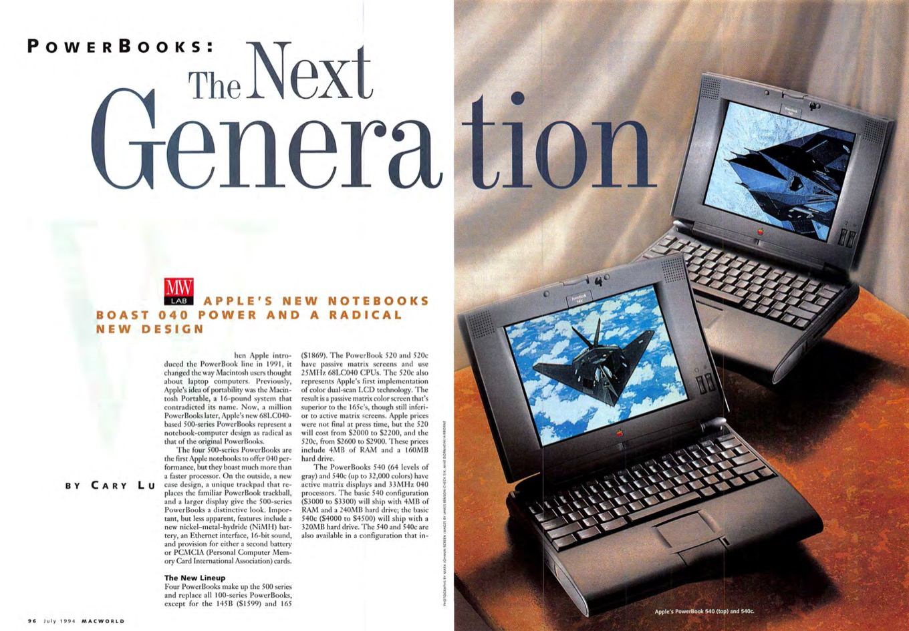

The Apple Macintosh PowerBook 5300/100 features a 100 MHz PowerPC 603e processor, 8 MB of RAM, and a 500 MB hard drive in a portable black case with a 9.5" grayscale passive-matrix display.
Although the PowerBook 5300/100 only supports 4-bit grayscale, a video card can be added to support up-to 16-bit colour on an external monitor.
Although the PowerBook 5300 series heralded a couple of firsts -- it was the first PowerBook line to have PowerPC processors and "hot swappable" drive bays -- it was initially plagued by battery and quality problems and required "reworking" by Apple to perform well.
The PowerBook 5300 is the first generation of PowerBook laptops manufactured by Apple Computer to use the PowerPC processor. Released in August 1995, these PowerBooks were notable for being the first to feature hot-swappable expansion modules for a variety of different units such as Zip drives; PC card slots as standard; and an infrared communication port. In common with most preceding Macintosh portables, SCSI, Serial, and ADB ports were included as standard. An internal expansion slot was also available for installing a variety of modules including Ethernet and video cards to drive a second monitor in mirroring or dual-screen modes.
Although a significant advance over preceding portable Macs, the PowerBook 5300 suffered from a number of design faults and manufacturing problems that have led to it being cited as among the worst Apple products of all time. Among other issues, it is one of the first laptops to suffer negative publicity from battery fires, and features a hot-swappable drive bay with insufficient space for an internal CD-ROM drive.
The PowerBook 5300 was designed during 1993 and 1994 under the codename M2. Compared with the preceding PowerBook 500 series, the 5300 was explicitly designed to be as small as possible (which precluded the use of a CD-ROM drive) and featured a more compact but less curvy design. Pop-out feet were used instead of the rotating rocker-style feet typical of earlier PowerBooks, and a slightly darker shade of grey was used for the plastic casing. The PowerBook 190 used an identical casing and shared many features and internal components, but used the older and slower Motorola 68LC040 processor instead, which could be upgraded to a full PPC processor by swapping the logic board.
For a variety of reasons, the PowerBook 5300 series has been viewed as a disappointment. Problems with cracked cases and overheating batteries prompted several recalls, while some users were simply unimpressed with the specifications of the machine and its lackluster performance. Some systems, after heavy use, would develop hinge problems; cracking of the hinge covers, as well as internal ribbon cables wearing/tearing and causing the display to show vertical lines and occasionally black out completely. This problem existed on earlier Powerbook models as well, most notably the Powerbook 500 series (including 520, 540c and the black-cased, higher-spec Japan-only 550c)
Although the PowerPC 603e processor built into the 5300 series was relatively fast for its time, because these machines lacked a Level 2 cache, real world performance was much less than the CPU frequency would suggest.
The variety of expansion bay options available was wide, but because of the size and shape of the computer, fitting a CD-ROM drive into the available space wasn't possible. Apple had a prototype CD-ROM module compatible with non-standard 80 mm disks that would have been used with the PowerBook 5300 series, but finished versions of this device were never released.[citation needed] Instead, it was planned that the 5300 series would use 3.5 inch magneto-optical drive modules initially, with the option of releasing a stretched version a year or two later that had space for a full-sized CD-ROM drive.
Two early production PowerBook 5300s caught fire, one at an Apple employee's house and another at the factory; it turned out that the Sony-manufactured lithium ion batteries had overheated while recharging. Apple recalled the 5300s sold (around a hundred machines) and replaced the batteries on these and all subsequent 5300s with nickel metal hydride batteries that provided only about 70% the endurance. At the time, the media viewed the problems with the PowerBook 5300 series as yet another example of Apple's decline.
‘Source – website like wikipidea, macworld, macspecs, etc’